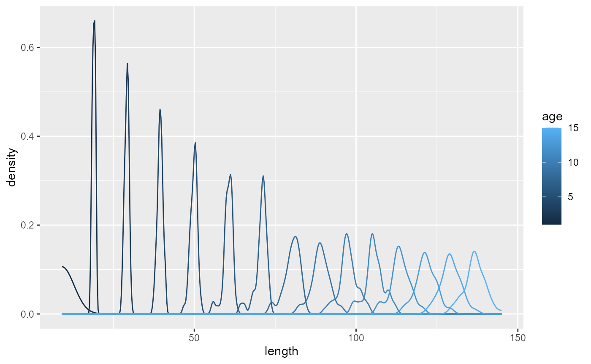
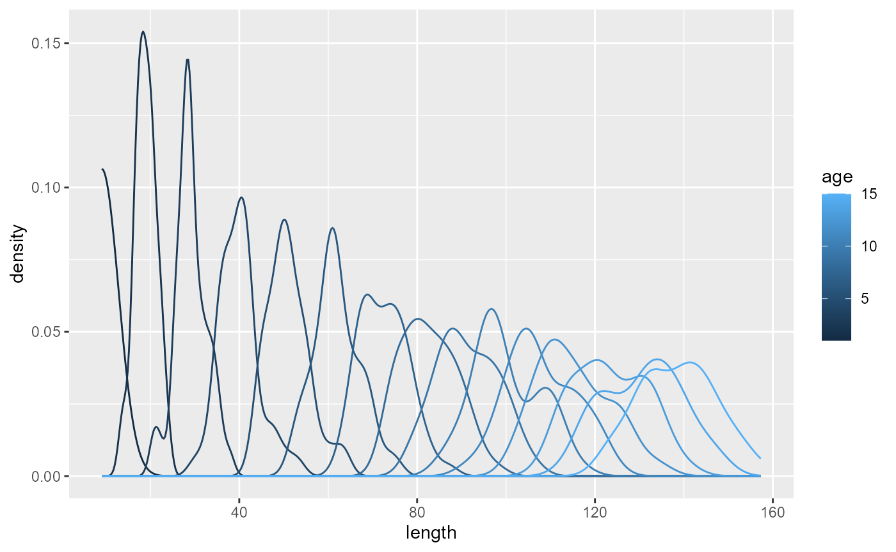
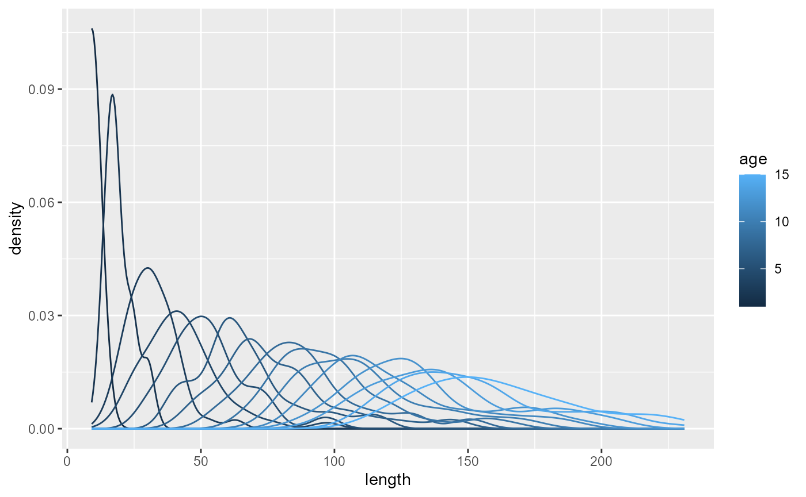
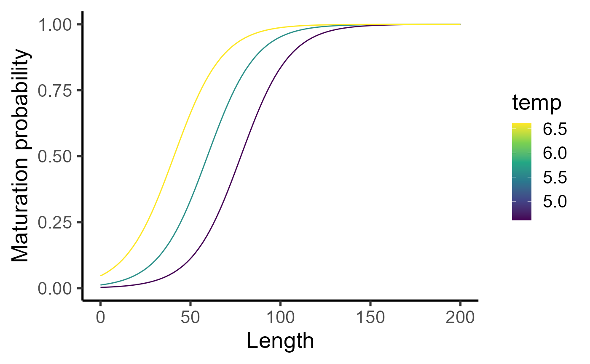
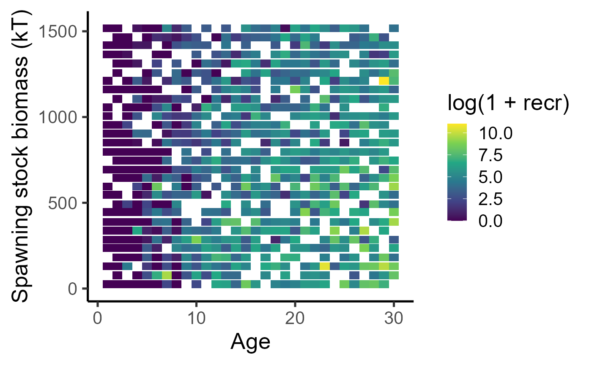
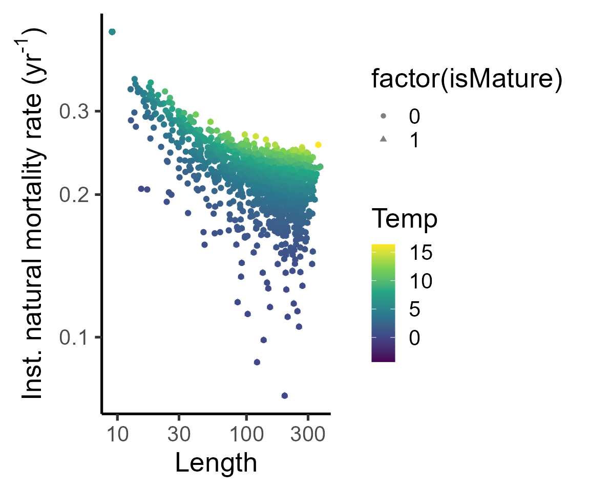

Fisheries model theory: biological model
Jaideep Joshi
8 April 2026
theory_bio.RmdIntroduction
A fish goes through four life-history processes every year:
Growth - This is the increment in the body size by growth. Growth rates are different for mature and immature individuals, since mature individuals allocate resources for reproduction.
Decision to mature - Every year, fish will decide whether or not to mature (until maturation). Once matured, reproduction begins.
Reproduction - production of eggs
Mortality - This is natural and fishing-induced death
Simulating growth
params_file = here::here("params/cod_params.ini")
fleet_params_file = here::here("params/fleet_1_params.ini")Let us now simulate the growth of a fish starting at age 1 upto age 30 under constant temperature and TSB. The fish will perform maturation, growth, and age increment, every year in that order. We will record the fish length at each timestep so that we can plot the growth trajectory.
fish = new(Fish, params_file)
fish$init(0, 5.61)
years = 1:31
length = numeric(31)
weight = numeric(31)
dw = numeric(31)
gsi = numeric(31)
dl_real = numeric(31)
dl_real_s = numeric(31)
for (i in years){
length[i] = fish$length
weight[i] = fish$weight
fish$updateMaturity(5.61)
fish$grow(0, 5.61)
dw[i] = fish$delta_weight
gsi[i] = fish$gsi_effective
dl_real[i] = fish$dl_real
dl_real_s[i] = fish$dl_real_stochastic
fish$set_age(fish$age+1)
}
tibble(years, length, weight, dw, gsi, dl_factor = dl_real_s/dl_real) |>
pivot_longer(-years) |>
ggplot(aes(x=years, y=value))+
geom_point()+
geom_line()+
facet_wrap(~name, scales="free")
Now, since the growth trajectory of a fish depends on the age at which it matures, and since maturation is a random process, let us simulate lots of fish and look at the possible growth trajectories.
growth_trajectories = function(beta1=NULL, beta2=NULL, N=50, temp_sd = 3, tsb_min = 0, tsb_max=1.93e3, growth_noise_sd = NULL){
names = c("t_birth", "age", "isMature", "isAlive", "length", "weight", "mort", "temp", "fec", "ssb")
dat_full = data.frame(data=matrix(nrow=0, ncol=length(names)))
colnames(dat_full) = names
plot(x=1, y=NA, xlim=c(0,31), ylim=c(0,300), xlab="Age", ylab = "Length")
for (f in 1:N){
fish = new(Fish, params_file)
if (!is.null(growth_noise_sd)) fish$par$growth_noise_sd = growth_noise_sd
if (!is.null(beta1)) fish$par$beta1 = beta1
if (!is.null(beta2)) fish$par$beta2 = beta2
dat = data.frame(data=matrix(nrow=0, ncol=length(names)))
colnames(dat) = names
temp0 = rnorm(1, mean=5.61, sd=temp_sd)
tsb0 = runif(1, min = tsb_min, max = tsb_max)
fish$init(tsb0, temp0)
dat[1,] = c(fish$get_state(), fish$naturalMortalityRate(5.61), 5.61, 0, 0.8*tsb0) # Assuming SSB is 80% of TSB, since we are not simulating a population
for (i in 2:30){
temp = rnorm(1, mean=5.61, sd=temp_sd)
tsb = runif(1, min = tsb_min, max = tsb_max)
fish$updateMaturity(temp)
fish$grow(tsb, temp)
fish$set_age(fish$age+1)
dat[i,] = c(fish$get_state(), fish$naturalMortalityRate(temp), temp, fish$produceRecruits(0.8*tsb*1e6, temp), 0.8*tsb) # Assuming SSB is 80% of TSB, since we are not simulating a population
}
points(dat$length~dat$age, type="l", col=scales::alpha(rainbow(N)[f], 0.3))
dat_full = rbind(dat_full, dat)
}
dat_full
}Growth trajectories with fixed temp, variable TSB (+density effect), and no growth stochasticity
dat_full1 = growth_trajectories(N=50, temp_sd=0, growth_noise_sd = 0)
dat_full1 |>
filter(age <= 15) |>
ggplot(aes(x=length, group=age, color=age))+
geom_density()
Growth trajectories with fixed temp, variable TSB (+density effect), and + growth stochasticity
dat_full2 = growth_trajectories(N=50, temp_sd=0, growth_noise_sd = 0.5)
dat_full2 |>
filter(age <= 15) |>
ggplot(aes(x=length, group=age, color=age))+
geom_density()
dat_full3 = growth_trajectories(N=50, temp_sd=0, growth_noise_sd = 0.2347)
dat_full3 |>
filter(age <= 15) |>
ggplot(aes(x=length, group=age, color=age))+
geom_density()
dat_full = growth_trajectories(N=50, growth_noise_sd = 0.2347)
dat_full |>
filter(age <= 15) |>
ggplot(aes(x=length, group=age, color=age))+
geom_density()
Decision to mature
Decision to mature is defined by a probabilistic maturation reaction norm (PMRN). Let us visualize the PMRN.
lvec = seq(0,200, length.out = 100)
avec = seq(1,31, length.out = 31)
fish = new(Fish, params_file)
fish$init(0, 5.61)
calc_maturation_prob1 = function(a,l, temp=5.61){
fish$set_age(a)
fish$set_length(l)
p = fish$maturationProb(temp)
p
}
list(lvec = seq(0,200, length.out = 100), avec = seq(1,31, length.out = 31)) %>% cross_df() %>% mutate(prob = purrr::map2_dbl(avec, lvec, ~calc_maturation_prob1(.x, .y))) %>%
ggplot() +
geom_raster(aes(x=avec, y=lvec, fill=prob)) + scale_fill_viridis_c() + labs(x="Age", y="Length") + theme_classic(base_size=20)## Warning: `cross_df()` was deprecated in purrr 1.0.0.
## ℹ Please use `tidyr::expand_grid()` instead.
## ℹ See <https://github.com/tidyverse/purrr/issues/768>.
## This warning is displayed once every 8 hours.
## Call `lifecycle::last_lifecycle_warnings()` to see where this warning was
## generated.
list(lvec = seq(0,200, length.out = 100), temp = c(4.61,5.61,6.61)) %>% cross_df() %>% mutate(prob = purrr::map2_dbl(lvec, temp, ~calc_maturation_prob1(a=10, l=.x, temp = .y))) %>%
ggplot() +
geom_line(aes(x=lvec, y=prob, group=temp, col=temp)) + scale_colour_viridis_c() + labs(x="Length", y="Maturation probability") + theme_classic(base_size=20)
This PMRN influences the growth trajectories by determining the age at maturation, like so,
dat_full_00 = growth_trajectories(0,0)
and leads to the following maturity ogives.
par(mfrow = c(2,1), mar=c(4,4,1,1))
dat_full %>% group_by(age) %>% summarize(maturity = mean(isMature)) %>% with(plot(maturity~age, ylab="Maturity", xlab="Age", type="l", col="cyan3", lwd=2))
dat_full %>% mutate(length_class = cut(length, breaks=20)) %>% group_by(length_class) %>% summarize(maturity = mean(isMature), length=mean(length)) %>% with(plot(maturity~length, ylab="Maturity", xlab="Length", type="l", col="cyan3", lwd=2))
Reproduction and recruitment
Cumulative reproductive investment translates into production of eggs.
get_recruits = function(ssb, temp){
fish = new(Fish, params_file)
# fish$par$growth_noise_sd = 0
fish$init(0, temp)
for (i in 1:15){
fish$updateMaturity(temp*100)
fish$grow(ssb/1e6, temp)
fish$set_age(fish$age+1)
# print(fish$length)
}
fish$print()
fish$produceRecruits(ssb, temp)
}
list(ssb = seq(0, 5e9, length.out=100), temp = c(4.61, 5.61, 6.61)) %>%
cross_df() %>%
mutate(eggs = purrr::map2_dbl(ssb, temp, ~get_recruits(.x, .y) )) %>%
mutate(eggs0 = purrr::map2_dbl(0, temp, ~get_recruits(.x, .y) )) %>%
ggplot(aes(y=eggs/eggs0,x=ssb, col=temp, group=temp)) +
geom_point(size=2) +
labs(x="Spawning stock biomass (Mt)", y = "Recruits / Recruits_0") +
theme_classic(base_size = 20) +
scale_colour_viridis_c(end=0.9)
Here is the number of recruits per fish as a function of spawning stock biomass obtained from the growth trajectories above.
dat_full %>% ggplot(aes(x=ssb, y=fec)) + geom_point(aes(col=temp)) + scale_colour_viridis_c() + labs(x="Spawning stock biomass (kT)", y = "Recruits per capita") + theme_classic(base_size=20) + scale_y_log10(limits = c(1e-4, NA)) ## Warning in scale_y_log10(limits = c(1e-04, NA)): log-10
## transformation introduced infinite values.
dat_full %>% mutate(ssb_class = ave(ssb, cut(ssb, breaks = 30))) %>% group_by(age, ssb_class) %>% summarize(recr = mean(fec)) %>%
ggplot() + geom_tile(aes(x=age, y=ssb_class, fill=log(1+recr))) + scale_fill_viridis_c() + labs(y="Spawning stock biomass (kT)", x = "Age") + theme_classic(base_size=20)## `summarise()` has grouped output by 'age'. You can override using the `.groups`
## argument.
Mortality
dat_full %>%
ggplot(aes(y=mort, x=length, col=temp))+
geom_point(aes(shape=factor(isMature)), alpha=0.5)+
geom_jitter()+
labs(x="Length", y=expression("Inst. natural mortality rate (yr"^"-1"*")"), col="Temp", )+
theme_classic(base_size = 20)+
scale_color_viridis_c()+
scale_y_log10()+
scale_x_log10()#+## Warning: Removed 45 rows containing missing values or values outside the scale range
## (`geom_point()`).
## Removed 45 rows containing missing values or values outside the scale range
## (`geom_point()`).
#facet_grid(cols=vars(isMature), labeller = as_labeller(c(`0`="Immature", `1`="Mature")))